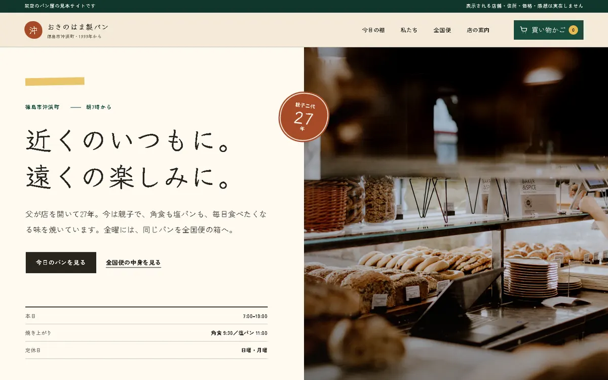
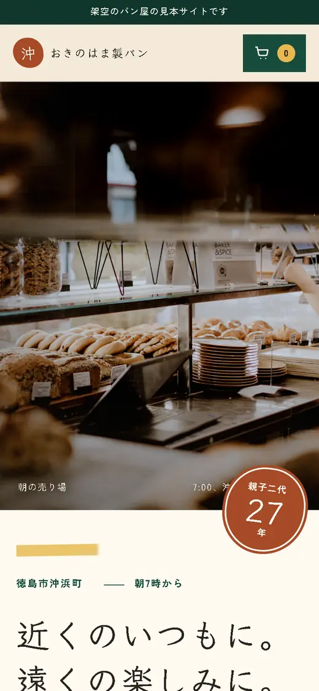
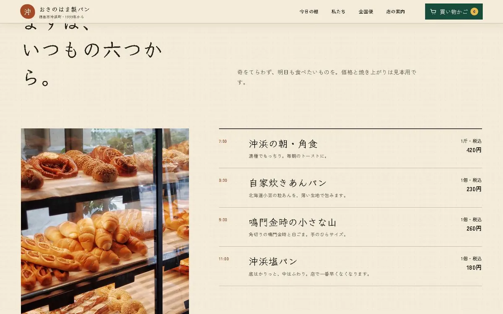
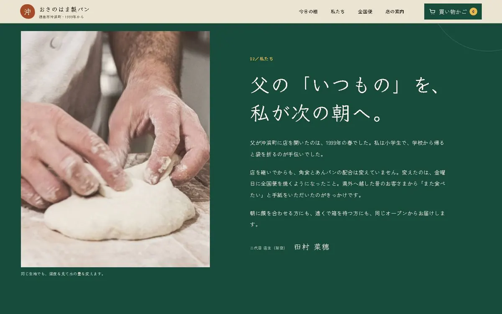
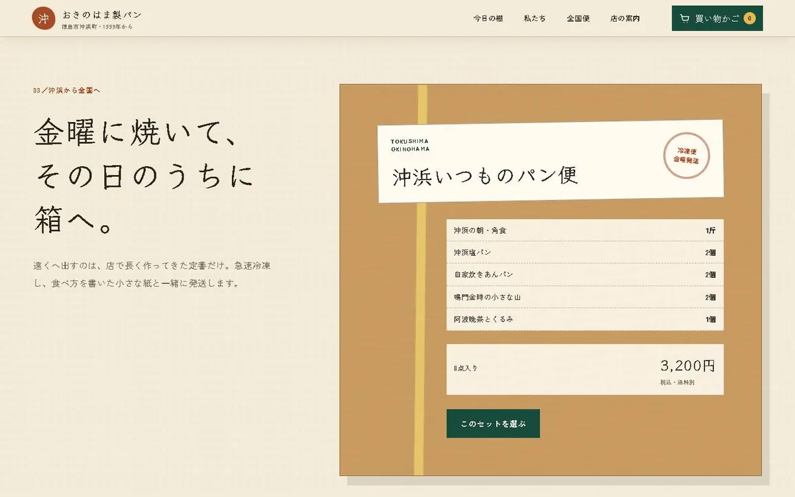

01 / OVERVIEW
何を作ったか
徳島市沖浜町で親子二代、1999年から続くパン屋（架空）のサイトです。地元で長く支えてくださる方と、新しく知る方の両方へ届くように作りました。
02 / APPROACH
工夫したこと
毎日の定番6品を、値段と焼き上がりの時刻まで具体的に書きました。金曜発送の全国便は、買い物かごから注文の確認まで実際に操作できます。
03 / SCENES
ページの中の3つの場面

SCENE01
毎日の定番を6つに絞り、値段と焼き上がりの時刻まで書きました。初めての人でも、何時に行けば買えるかが分かります。

SCENE02
親子二代で続く店の、いまの作り手の言葉。長く通ってくれる地元の人に向けた場面です。

SCENE03
遠くの人には、金曜に焼いて送る便を。箱の中身と合計を見ながら、注文の確認まで実際に操作できます。